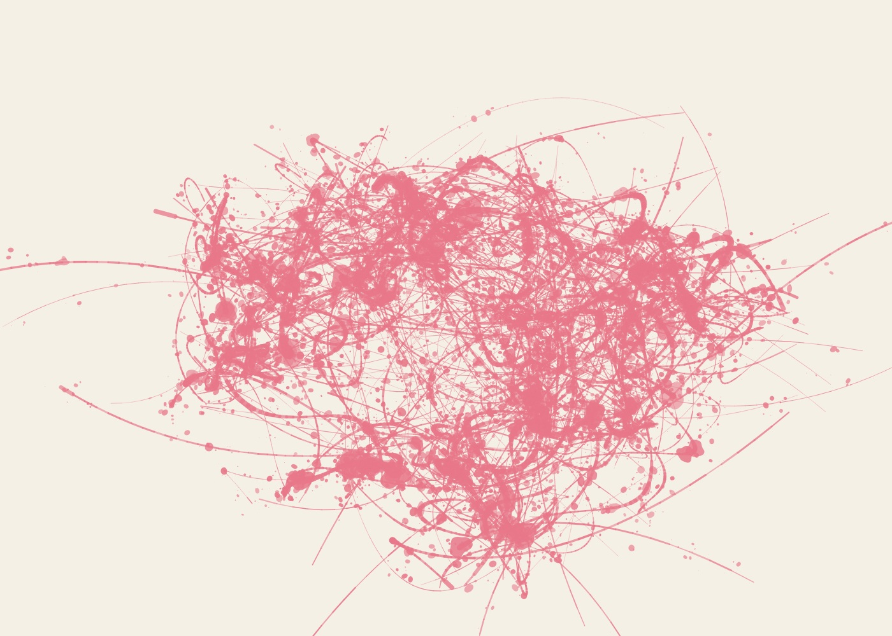
01
Connected Fields · Action Painting
- Seed
- ACL-20261110-01-19175
- Series
- Connected Fields
- Format
- Landscape · 1400 × 1000
- Additional φ pull
- 38%
- Material
- Action Painting
- Palette
- pastel
Can one number compose a drawing?
14 drawings made on 10 November 2026. Different materials, different compositions, and room to make each one your own.

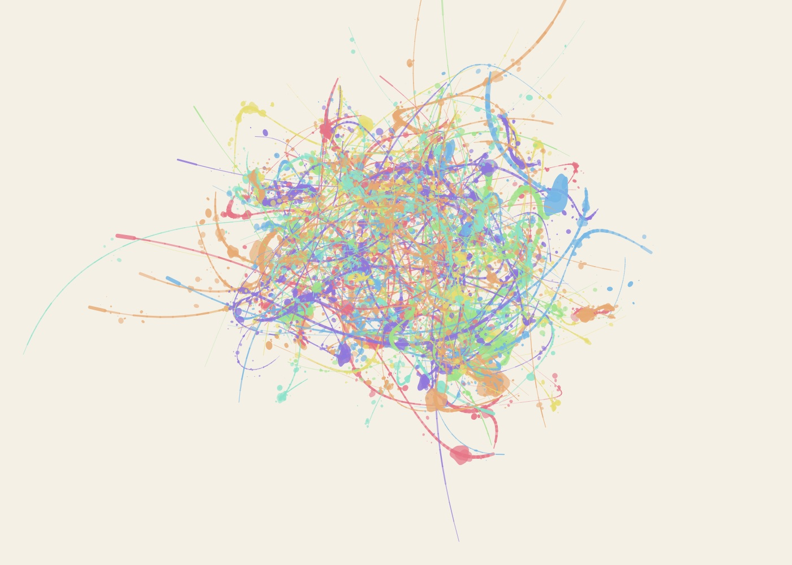
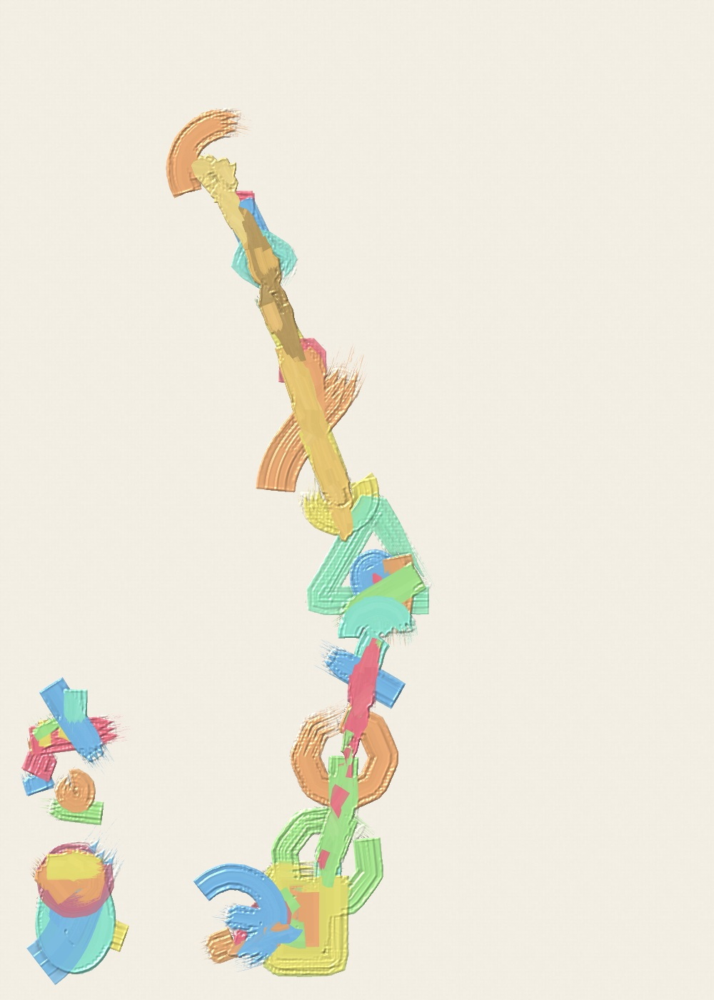
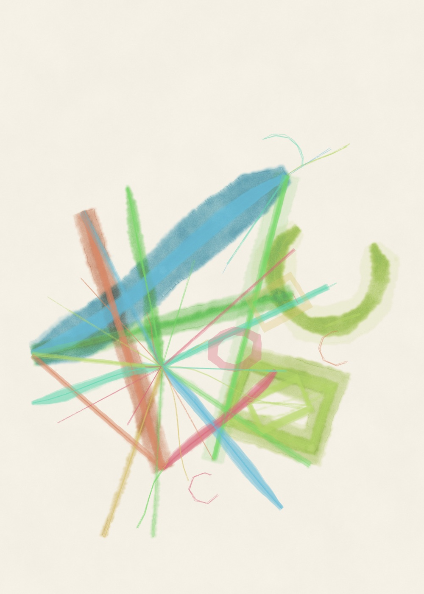
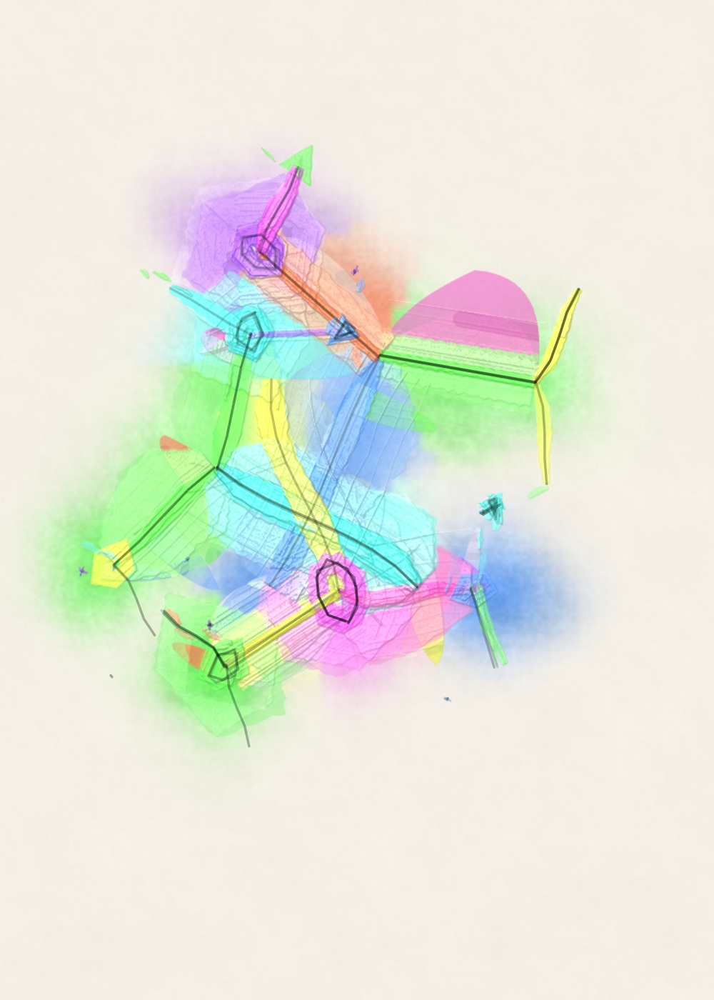
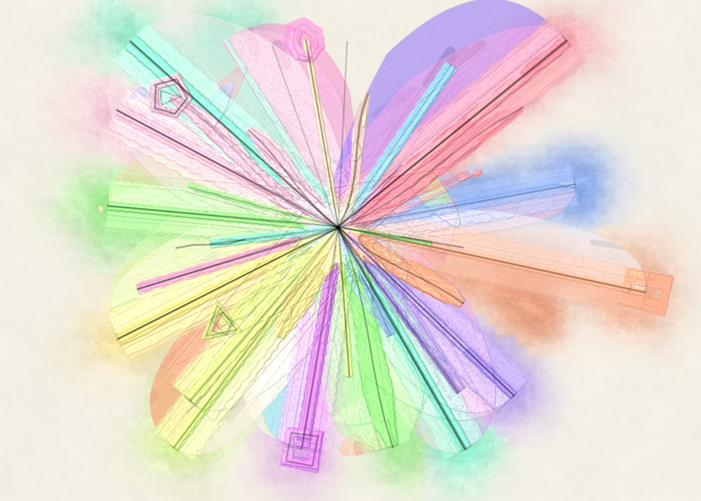
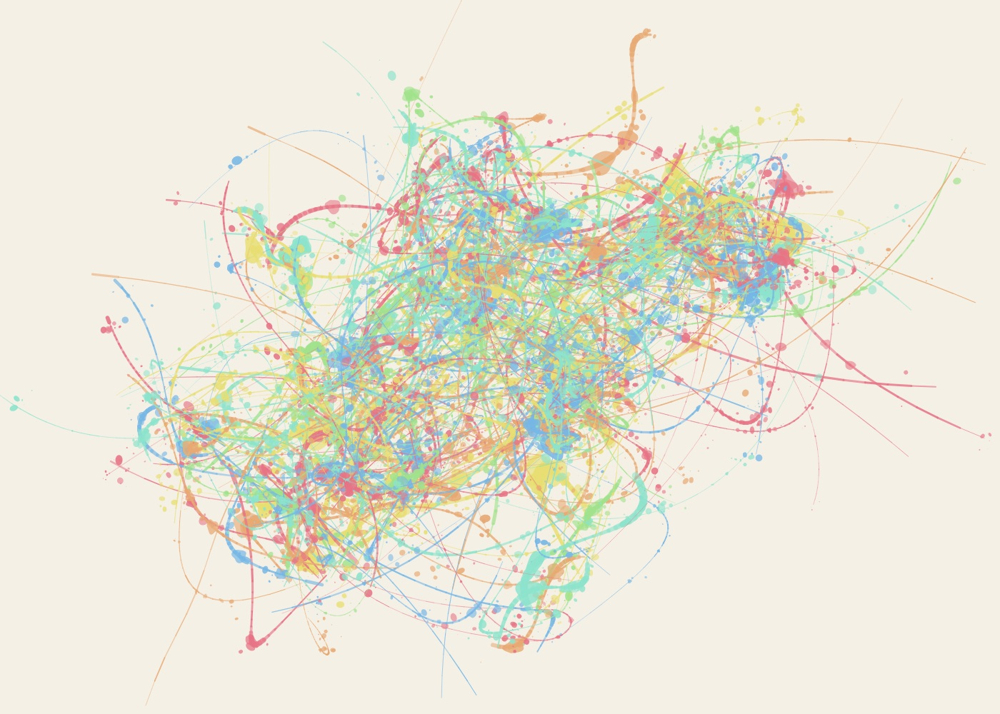
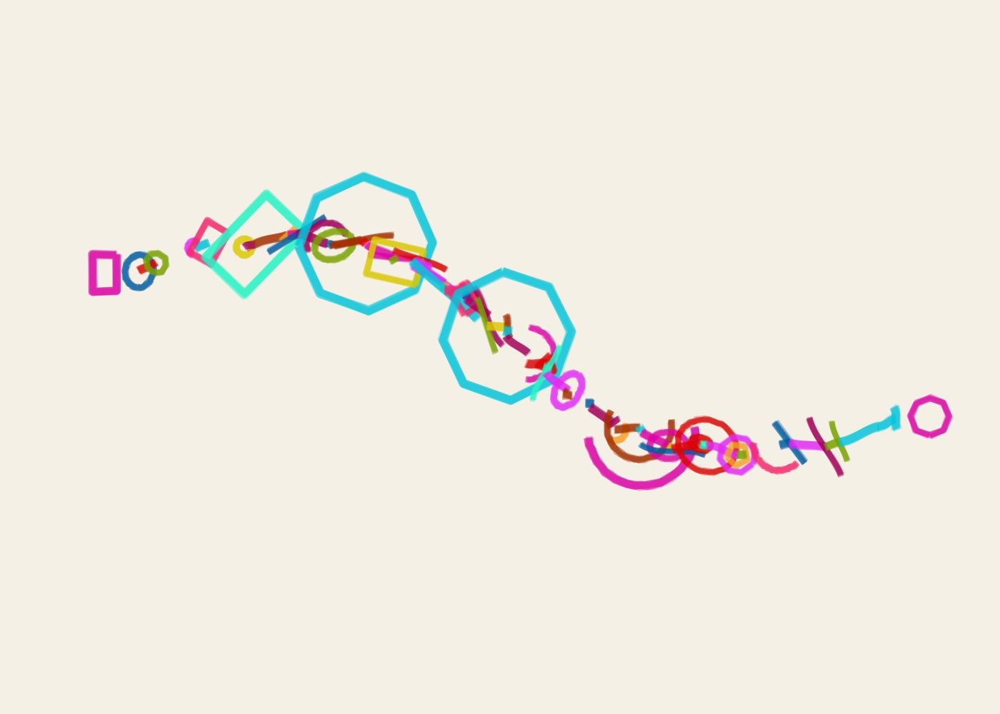
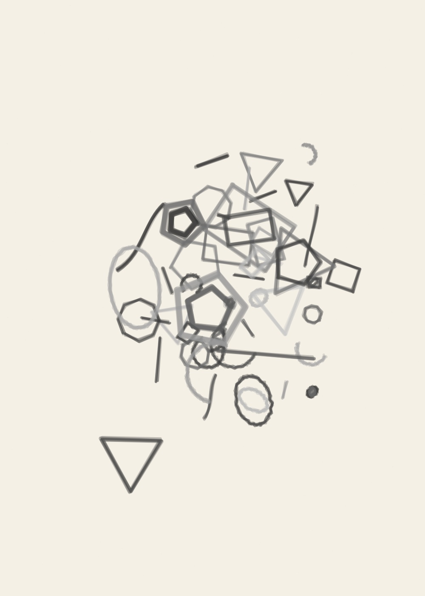
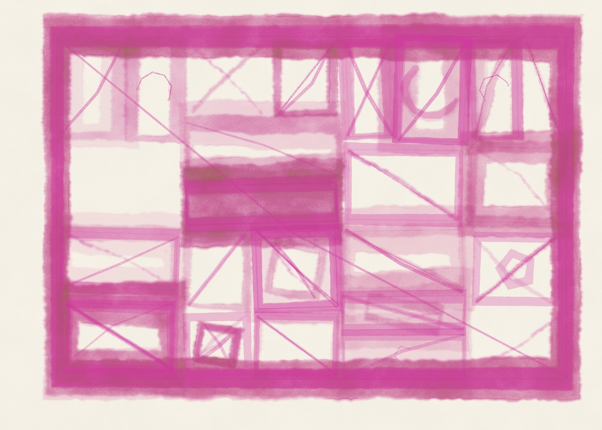
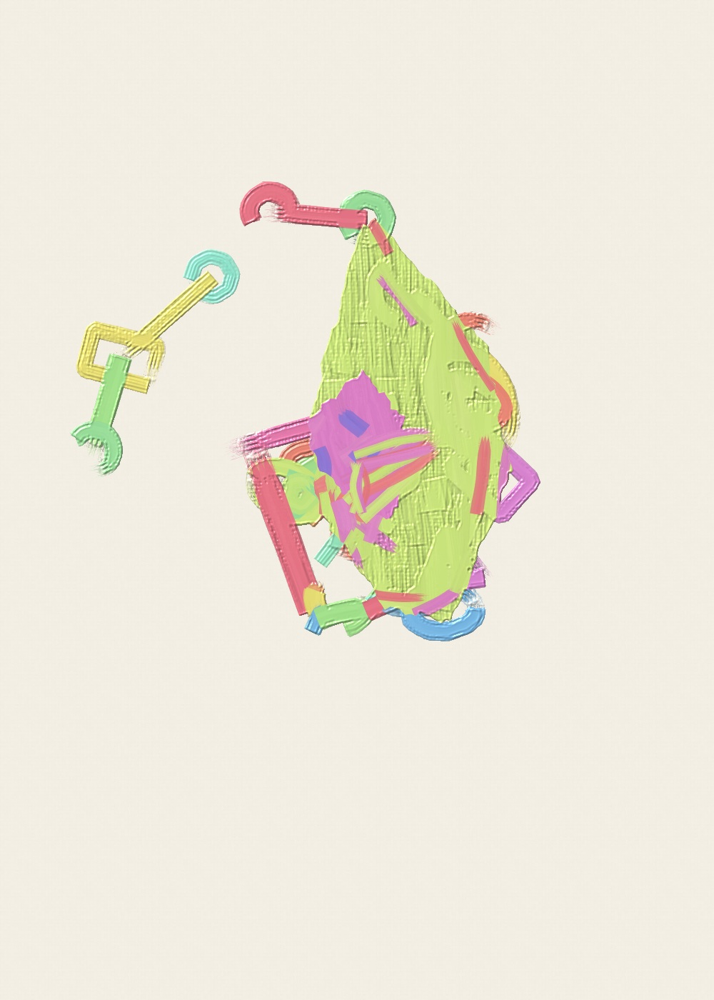
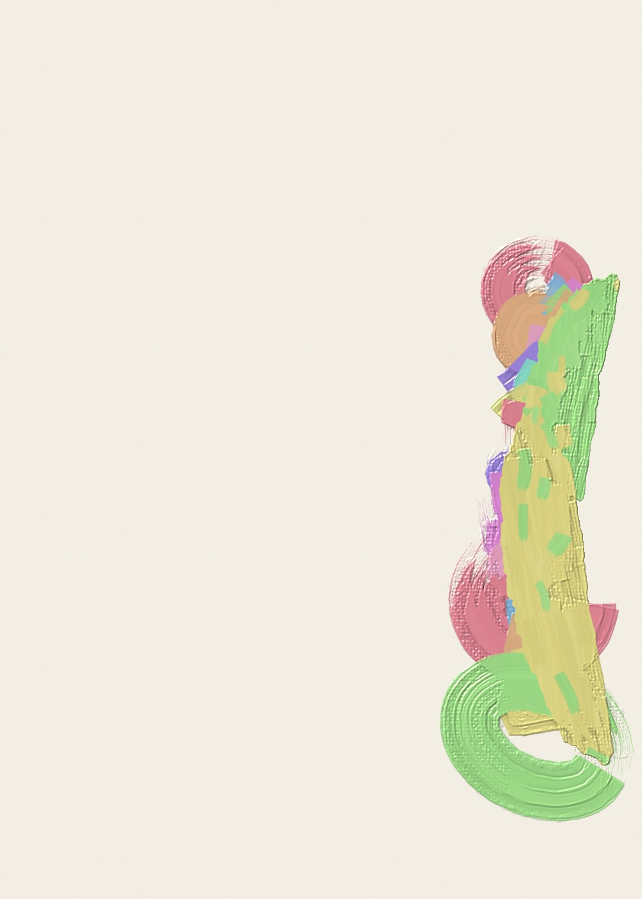
Three procedural artists share each sheet, taking turns.
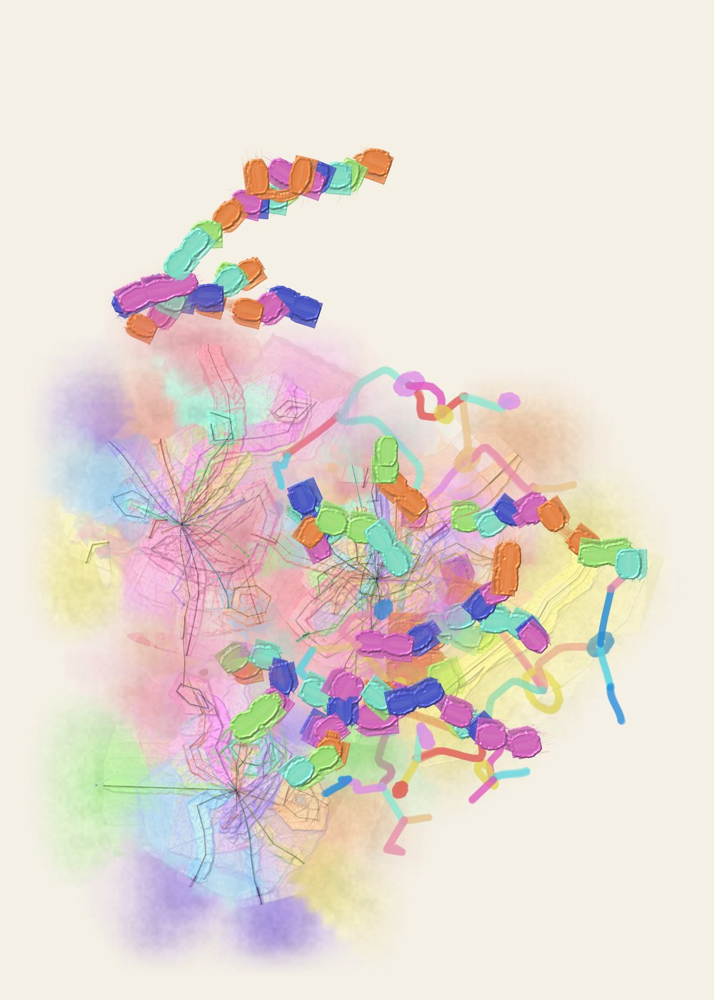
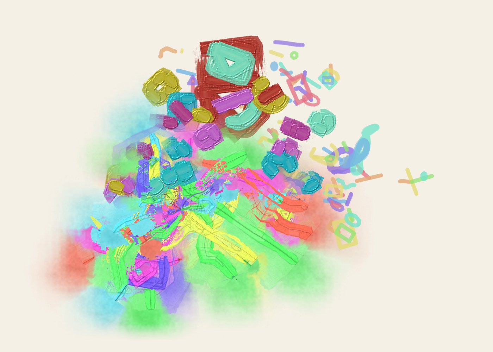
The golden ratio helps arrange each drawing. The material changes how those arrangements feel. Open a piece to see its settings, then change whatever you like.
MAKE YOUR OWN →